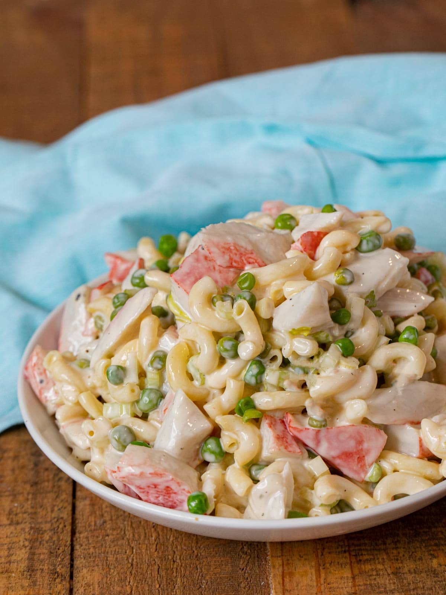

Seafood Pasta Salad

Description
Simple seafood pasta salad perfect for picnics
Ingredients
1 1/2 (8 ounce) packages tri-color pasta
3 stalks celery
1 pound imitation crabmeat
1 cup frozen gren peas
1 cup mayonnaise
1 1/2 tablespoons white sugar
2 tablespoons white vinegar
3 tablespoons milk
1 teaspoon salt
1/4 teaspoon ground black pepper
Steps
- Bring a large pot of lightly salted water to a boil. Add pasta and cook for 8 to 10 minutes or until al dente; rinse under cold water until cool and drain
- While pasta is cooking, chop celery and crabmeat. Run hot water over peas to defrost
- In a large bowl, whisk together the mayonnaise, sugar, vinegar, milk, salt and pepper. Add the pasta, celery and crabmeat and stir until evenly coated. Adjust the salt, sugar or mayonnaise to suit your taste. Chill several hours before serving